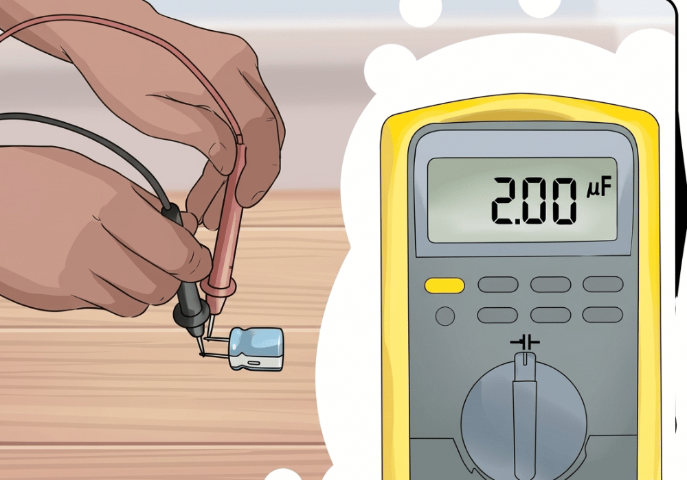
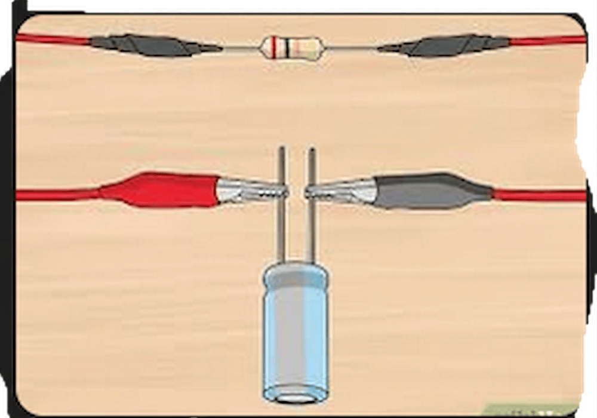
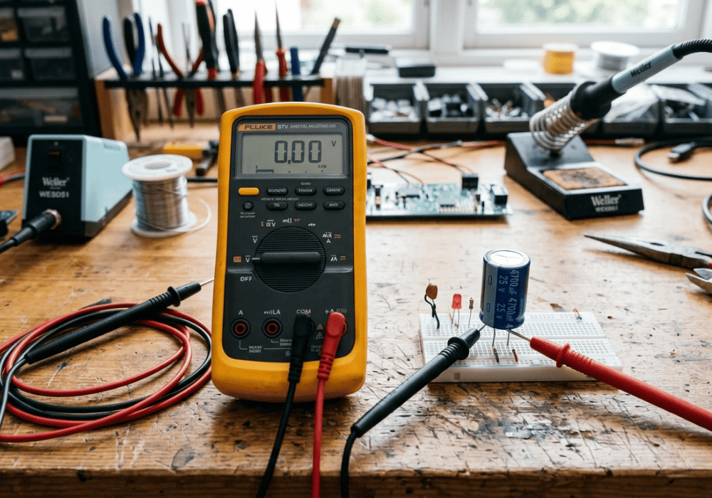
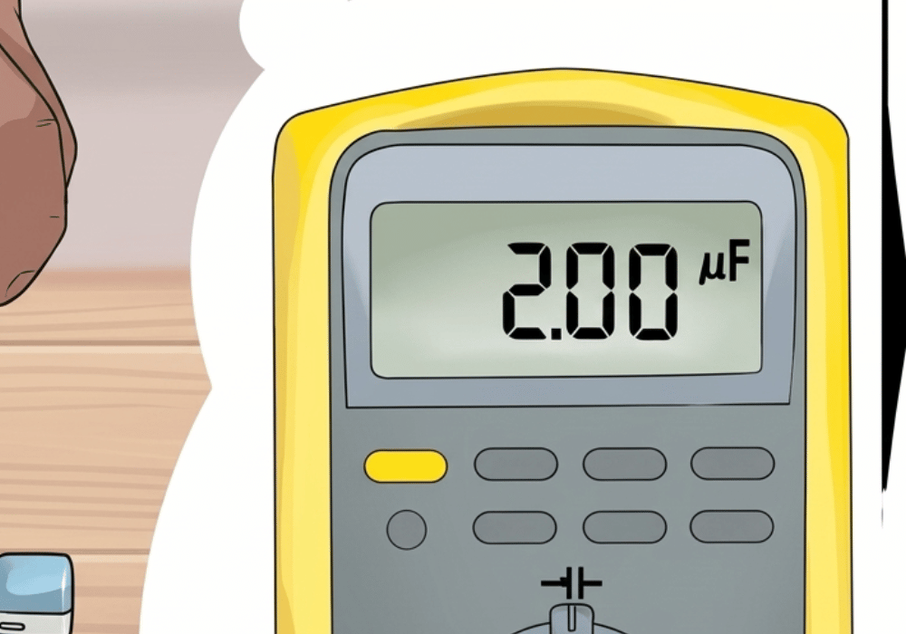

Comment mesurer la capacité d'un condensateur électrolytique avec un multimètre ?
La mesure de capacité est essentielle pour diagnostiquer un condensateur. Mais tous les multimètres ne sont pas égaux. Suivez ce guide illustré étape par étape.
Avant de commencer, un point crucial : la plupart des multimètres standards ne possèdent pas de fonction capacimètre. Si votre appareil n'a pas cette fonction, vous ne pourrez pas mesurer la capacité directement. Voici les deux scénarios qui se présentent, illustrés pour vous guider.
Scénario 1 : Votre multimètre dispose d'une fonction capacimètre
C'est la méthode la plus précise. Voici comment procéder :

Débrancher l'alimentation du circuit
Si le condensateur est déjà soudé dans un circuit, coupez l'alimentation de ce circuit pour éviter tout risque d'électrocution et pour ne pas endommager le multimètre.
Décharger le condensateur (étape CRUCIALE)
Les condensateurs électrolytiques peuvent stocker de l'énergie, même après avoir été débranchés. Pour éviter les décharges électriques et ne pas endommager le multimètre, il est essentiel de décharger le condensateur avant toute mesure.
Méthode sûre : Utilisez une résistance de forte valeur (par exemple, 1 kΩ ou plus) et connectez ses deux extrémités aux deux bornes du condensateur pendant quelques secondes. Vous pouvez également utiliser un tournevis à manche isolé, mais la résistance est préférable pour éviter les étincelles.

Régler le multimètre sur la fonction capacimètre
Tournez le commutateur rotatif pour sélectionner la fonction de mesure de capacité. Elle est généralement indiquée par le symbole d'un condensateur (deux barres parallèles) et l'unité de mesure "F" (Farad) ou des sous-multiples comme μF (microfarad).
Connecter les cordons de mesure
Insérez le cordon noir dans la borne commune (COM). Insérez le cordon rouge dans la borne marquée du symbole du condensateur ou de l'unité de capacité (μF/F).

Connecter le condensateur
Important : Les condensateurs électrolytiques sont polarisés. La borne négative est généralement marquée par une bande de couleur différente sur le boîtier, tandis que la borne positive est plus longue. Connectez le cordon noir à la borne négative (-) et le cordon rouge à la borne positive (+).

Lire la valeur
Le multimètre affichera la valeur de la capacité mesurée. Attendez quelques secondes pour que la lecture se stabilise. Comparez cette valeur avec la valeur nominale inscrite sur le condensateur. Une légère variation est normale (tolérance), mais une différence significative indique un condensateur défectueux.

Scénario 2 : Votre multimètre ne dispose pas d'une fonction capacimètre
Si votre multimètre n'a pas cette fonction, vous ne pouvez pas mesurer la capacité directement. Vous pouvez seulement vérifier si le condensateur est défectueux ou non en utilisant la fonction de mesure de résistance (ohmmètre). Voici comment faire :
Suivez les étapes 1 et 2 du scénario 1
Débranchez l'alimentation et déchargez le condensateur (voir les images ci-dessus).
Régler le multimètre sur la fonction ohmmètre
Tournez le commutateur rotatif pour sélectionner la fonction de mesure de résistance (symbole Ω). Choisissez une gamme de résistance moyenne (par exemple, 20 kΩ ou 200 kΩ).
Connecter les cordons de mesure
Connectez le cordon noir à la borne COM et le cordon rouge à la borne marquée du symbole Ω.
Connecter le condensateur
Connectez le cordon noir à la borne négative (-) et le cordon rouge à la borne positive (+).
Observer la lecture
Si le condensateur est bon : L'écran affichera une valeur de résistance qui augmentera rapidement pour atteindre une valeur infinie (généralement indiquée par "OL" ou un 1 à gauche de l'écran). Cela s'explique par le fait que le multimètre charge le condensateur, et une fois chargé, il ne laisse plus passer le courant continu.
Si le condensateur est en court-circuit : L'écran affichera une valeur de résistance très faible (proche de 0 Ω).
Si le condensateur est coupé : L'écran affichera une valeur de résistance infinie (OL) dès le début, sans augmentation progressive.
En résumé
Pour mesurer la capacité d'un condensateur, il est préférable d'utiliser un multimètre équipé d'un capacimètre. N'oubliez jamais de décharger le condensateur avant toute manipulation pour éviter les risques électriques et préserver votre appareil de mesure.
Acheter des condensateurs au Togo
Pour vos réparations, procurez-vous des condensateurs électrolytiques fiables chez TogoMicroFarad. Nous livrons rapidement à Lomé, Kara et partout au Togo. Tous nos composants sont testés et garantis 105°C.
📦 Lot de 10 valeurs courantes
Idéal pour les réparateurs : 0,1 µF à 100 µF (50 V) — les 10 valeurs les plus utilisées.
⚡ Condensateurs individuels
Achetez exactement la valeur dont vous avez besoin, à l'unité ou en lot personnalisé.
par unité · lot de 6 à 1 000 FCFA
Voir toutes les valeursVous avez un besoin spécifique ? Commandez directement via WhatsApp
Commander sur WhatsApp